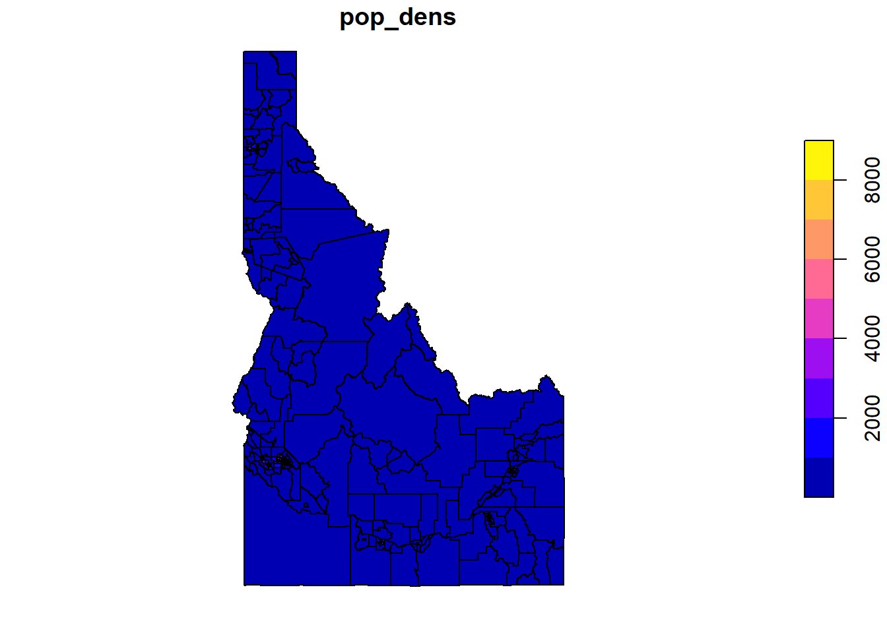
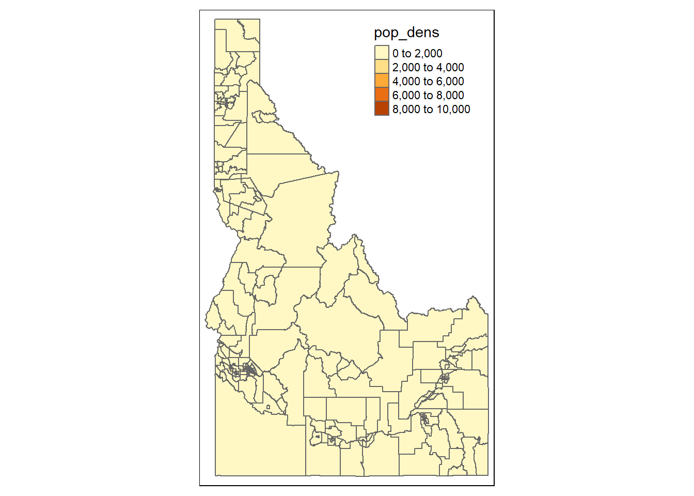

Code
library(tidyverse, quietly = TRUE)
library(spData)
library(sf)Carolyn Koehn
Libraries for today:
[1] "iso_a2" "name_long" "continent" "region_un" "subregion" "type"
[7] "area_km2" "pop" "lifeExp" "gdpPercap" "geom" # A tibble: 6 × 3
iso_a2 name_long continent
* <chr> <chr> <chr>
1 FJ Fiji Oceania
2 TZ Tanzania Africa
3 EH Western Sahara Africa
4 CA Canada North America
5 US United States North America
6 KZ Kazakhstan Asia # A tibble: 6 × 2
name_long continent
<chr> <chr>
1 Fiji Oceania
2 Tanzania Africa
3 Western Sahara Africa
4 Canada North America
5 United States North America
6 Kazakhstan Asia # A tibble: 3 × 3
iso_a2 name_long continent
* <chr> <chr> <chr>
1 FJ Fiji Oceania
2 TZ Tanzania Africa
3 EH Western Sahara Africa # A tibble: 8 × 2
continent pop
<chr> <dbl>
1 Africa 1154946633
2 Antarctica 0
3 Asia 4311408059
4 Europe 669036256
5 North America 565028684
6 Oceania 37757833
7 Seven seas (open ocean) 0
8 South America 412060811# A tibble: 6 × 3
name_long coffee_production_2016 coffee_production_2017
<chr> <int> <int>
1 Angola NA NA
2 Bolivia 3 4
3 Brazil 3277 2786
4 Burundi 37 38
5 Cameroon 8 6
6 Central African Republic NA NAJoining with `by = join_by(name_long)`[1] 177What is the population density for the tracts in the cejst data? Our data sources are:
cejst$TPF)tigris::tracts(), column ALAND)Simple feature collection with 6 features and 13 fields
Geometry type: POLYGON
Dimension: XY
Bounding box: xmin: -117.0628 ymin: 41.99601 xmax: -111.5077 ymax: 46.39597
Geodetic CRS: NAD83
STATEFP COUNTYFP TRACTCE GEOID NAME NAMELSAD MTFCC
1 16 041 970200 16041970200 9702 Census Tract 9702 G5020
2 16 041 970100 16041970100 9701 Census Tract 9701 G5020
3 16 073 950200 16073950200 9502 Census Tract 9502 G5020
4 16 073 950101 16073950101 9501.01 Census Tract 9501.01 G5020
5 16 073 950102 16073950102 9501.02 Census Tract 9501.02 G5020
6 16 069 960700 16069960700 9607 Census Tract 9607 G5020
FUNCSTAT ALAND AWATER INTPTLAT INTPTLON
1 S 455342589 2412885 +42.0609834 -111.7147361
2 S 1263363258 9752226 +42.2231666 -111.8485407
3 S 19603341439 77025612 +42.5728508 -116.1896903
4 S 117363851 1585581 +43.5924261 -116.9602208
5 S 132949223 2844915 +43.5247849 -116.8481343
6 S 770216313 9225885 +46.0956517 -116.8989005
geometry ALAND_sqmi
1 POLYGON ((-111.935 42.00164... 175.80876
2 POLYGON ((-112.1263 42.2853... 487.78728
3 POLYGON ((-117.027 43.54418... 7568.89245
4 POLYGON ((-117.0268 43.6465... 45.31444
5 POLYGON ((-116.9284 43.5437... 51.33198
6 POLYGON ((-117.0628 46.3652... 297.38218
Breaking News: tmap 3.x is retiring. Please test v4, e.g. with
remotes::install_github('r-tmap/tmap')
---
title: "Session 14 code"
author: "Carolyn Koehn"
format: html
---
Libraries for today:
```{r}
#| message: false
#| warning: false
library(tidyverse, quietly = TRUE)
library(spData)
library(sf)
```
## Subsetting Data:
```{r}
colnames(world)
```
```{r}
head(world)[,1:3] %>%
st_drop_geometry()
```
```{r}
world %>%
dplyr::select(name_long, continent) %>%
st_drop_geometry() %>%
head(.)
```
```{r}
head(world)[1:3, 1:3] %>%
st_drop_geometry()
```
```{r}
world %>%
filter(continent == "Asia") %>%
select(name_long, continent) %>%
st_drop_geometry() %>%
head(.)
```
## Create new columns
```{r}
world_dens <- world %>%
filter(continent == "Asia") %>%
select(name_long, continent, pop, gdpPercap ,area_km2) %>%
mutate(., dens = pop/area_km2,
totGDP = gdpPercap * pop) %>%
st_drop_geometry() %>%
head(.)
```
## Aggregate / Summarise
```{r}
world %>%
st_drop_geometry(.) %>%
group_by(continent) %>%
summarize(pop = sum(pop, na.rm = TRUE))
```
## Joins
```{r}
head(coffee_data)
```
```{r}
world_coffee = left_join(world, coffee_data)
nrow(world_coffee)
```
```{r}
plot(world_coffee["coffee_production_2016"])
```
```{r}
world_coffee_inner = inner_join(world, coffee_data)
nrow(world_coffee_inner)
```
## Practice:
What is the population density for the tracts in the cejst data? Our data sources are:
- Total population in each tract (`cejst$TPF`)
- Area in $m^2$ of each tract (`tigris::tracts()`, column `ALAND`)
```{r}
#| eval: false
cejst <- st_read("/opt/data/data/assignment06/cejst_pnw.shp")
id_tracts <- tigris::tracts(state = "ID", year = 2015)
```
```{r}
#| include: false
cejst <- st_read("C:/Users/carolynkoehn/Documents/HES505_Fall_2024/data/2023/assignment06/cejst_pnw.shp")
id_tracts <- tigris::tracts(state = "ID", year = 2015)
```
```{r}
cejst_id <- cejst %>%
filter(SF == "Idaho")
```
```{r}
id_tracts <- id_tracts %>%
mutate(ALAND_sqmi = ALAND/2589988.11)
head(id_tracts)
```
```{r}
id_tracts <- st_drop_geometry(id_tracts)
```
```{r}
cejst_id_join <- inner_join(cejst_id, id_tracts,
by = c("GEOID10" = "GEOID")) %>%
mutate(pop_dens = TPF/ALAND_sqmi)
```
```{r}
plot(cejst_id_join["pop_dens"])
library(tmap)
tm_shape(cejst_id_join) +
tm_polygons(col = "pop_dens")
```
```{r}
ggplot(cejst_id_join, aes(x=pop_dens, y=IS_PFS)) +
geom_point()
```